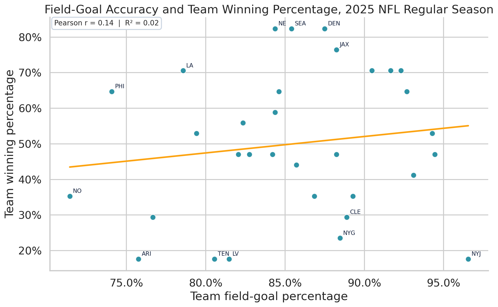
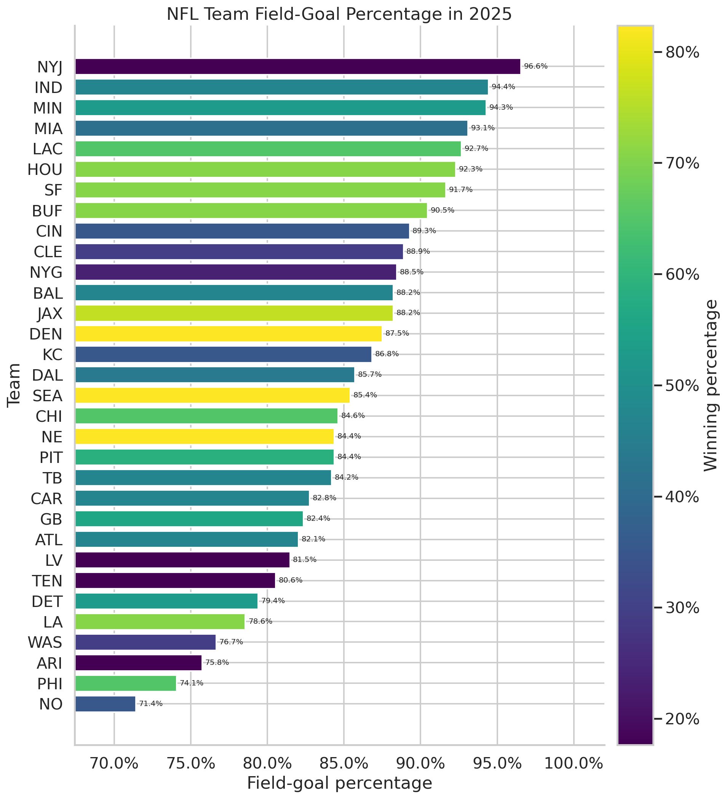

32
NFL teams, one row per team
Research question: What was the relationship between field-goal percentage and team winning percentage during the 2025 NFL regular season?
NFL teams, one row per team
completed regular-season games
missing values in analysis variables
Field goals can decide close games, so it is reasonable to ask whether accurate kicking is connected to team success across a full season. The answer matters to coaches, front offices, players, and fans evaluating how special-teams performance fits into winning football.
I expected a positive relationship, but this is an observational team-level analysis. It measures association, not whether field-goal accuracy causes teams to win.
I collected data through the nflreadpy load functions, which provide access to nflverse team statistics and schedules. The analysis uses load_team_stats(2025, summary_level="reg") for team kicking totals and load_schedules(2025) for game results. Cached copies from the official nflverse-data releases are included so the notebook remains reproducible.
The unit of analysis is an NFL team in the 2025 regular season. After filtering and joining, the dataset contains 32 rows and 13 analysis columns. Every team played 17 games. There were no missing values in the selected analysis variables.
| Variable | Concept | Operational definition | Role |
|---|---|---|---|
field_goal_percentage | Team field-goal accuracy | Field goals made divided by attempts | Explanatory variable |
winning_percentage | Team season success | (Wins + 0.5 × ties) divided by 17 games | Outcome variable |
fg_made, fg_att | Kicking volume | Regular-season team makes and attempts | Build and verify FG% |
wins, losses, ties | Team record | Calculated from home and away final scores | Build winning% |
season == 2025, game_type == "REG", and games with final home and away scores.I retained all teams rather than deleting apparent outliers because each is a real part of the league-wide question. See the complete notebook, analysis script, and cleaned data.


The 2025 season does not provide strong evidence that teams with higher field-goal percentages won more games. The Pearson correlation was positive but weak, and the p-value was well above 0.05. A rank-based check produced the same basic conclusion (Spearman's ρ = 0.13, p = 0.49).
The Jets illustrate why the relationship is weak: they made 28 of 29 attempts, the league's highest percentage, yet won only three games. Accurate kicking can still matter in a specific close game, but team wins also depend on offense, defense, turnovers, injuries, opponent strength, coaching decisions, and how often a team attempts field goals.
Answer: Better field-goal percentage was associated with only a slight increase in winning percentage, and the observed relationship was not statistically significant. It would be incorrect to conclude that field-goal accuracy had no value or that it caused the small difference in team records.
With more time, I would model every attempt using distance, weather, stadium, win probability, and game situation, then compare actual makes with expected field goals.
The code, raw-source snapshots, cleaned dataset, and charts are available in the public GitHub repository. The workflow is designed so another person can reproduce the analysis.
AI usage disclosure: OpenAI ChatGPT with Codex (GPT-5 family), accessed September 12, 2026, was used to help organize the project, draft and debug Python/HTML/CSS code, and revise explanatory writing. I reviewed the calculations, source documentation, cleaning decisions, visualizations, and conclusions and remain responsible for the submitted work. AI was not used as a data source.